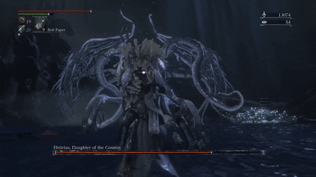

Ebrietas, Daugther of the Cosmos

Description
Ebrietas is a Great One and possibly the daughter of Kos. She has allied
with the Healing Church which created the Choir in order to protect and
study her. She is weeping at an altar on which the Isz Chalice can be found.
Tips
- A mostly safe place to stay is between her tentacles in the center of her back.
- Use bolt for extra damage against this boss.
- Her Head is her weak spot and can be stunned with big charged attacks.